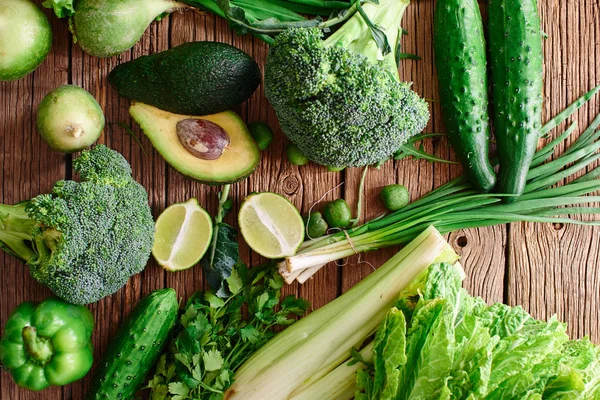

The benefits of healthy eating

“But what do I actually gain by eating better?”
It is natural to think about giving up the quest to eat well, because
we can hardly palpably list all the advantages it brings us. But today
we are going to give you a hand by showing the biggest benefits of healthy eating.
Look that:
- Food Autonomy
- Increase Immunity
- Lose Weight With Good Food